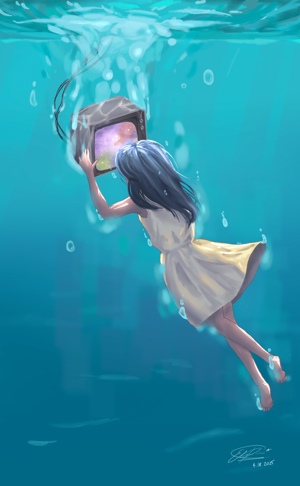
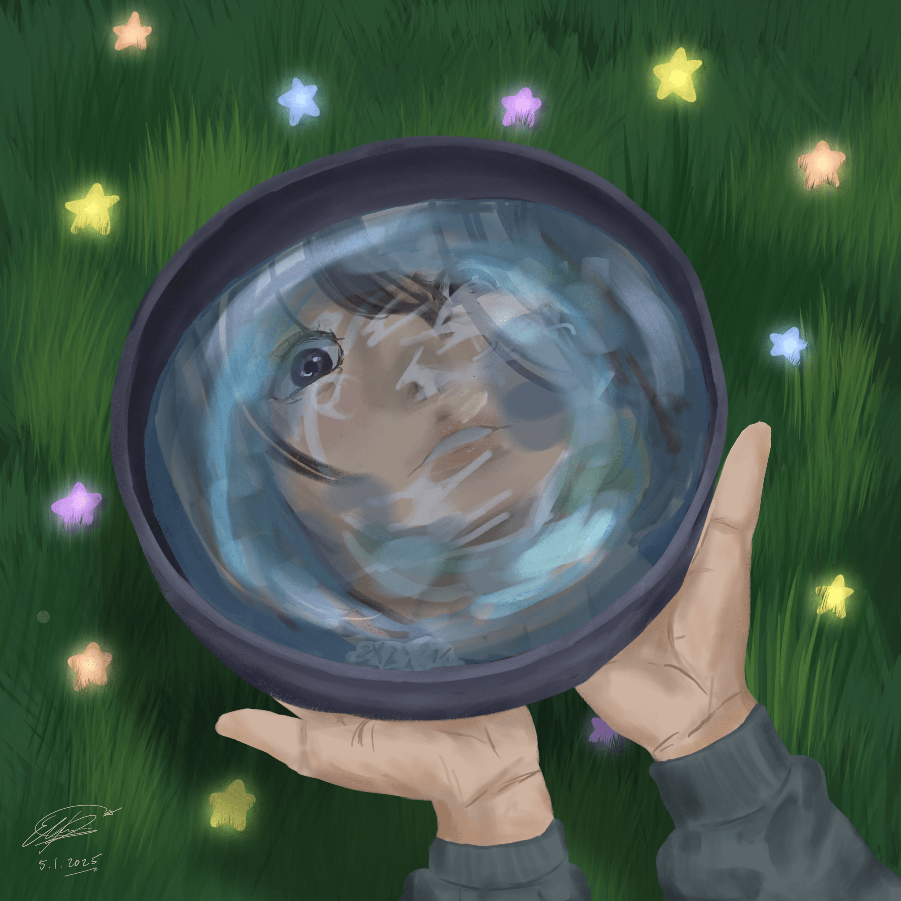
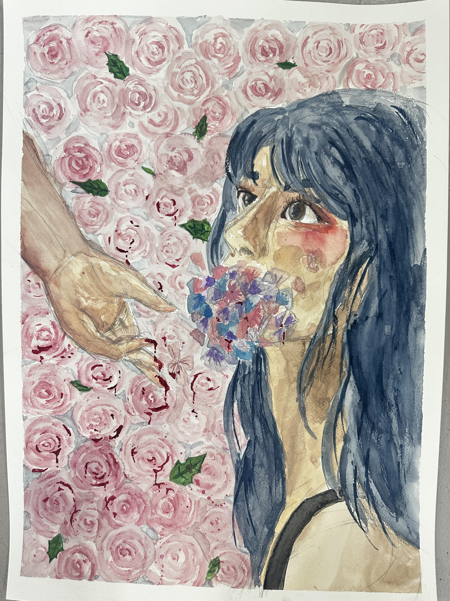
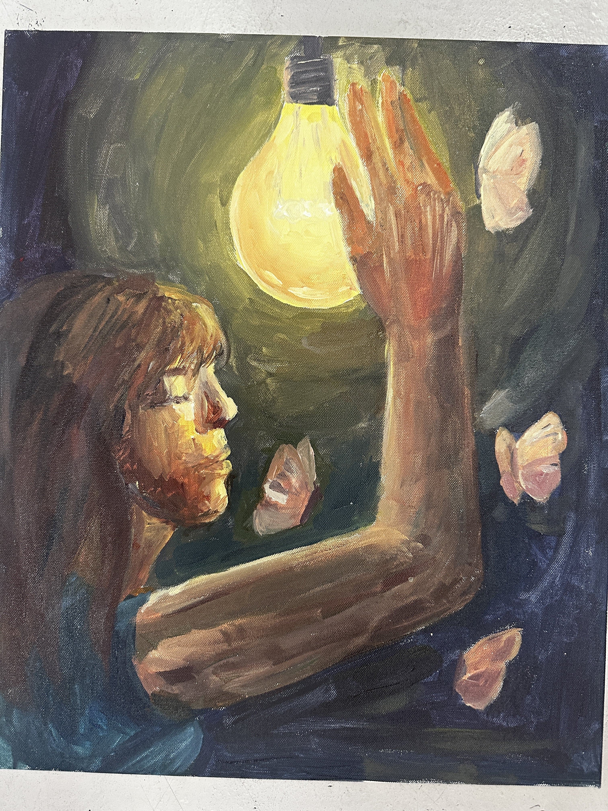
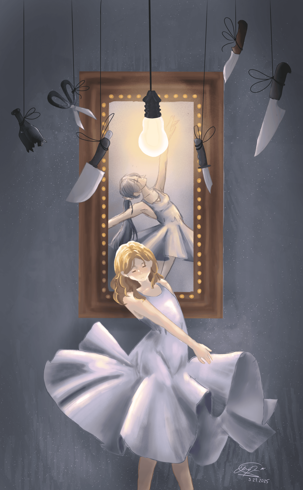

I trust that y'all are decent human beings and WON'T use any of the artworks posted here elsewhere without my permission, no less claiming it as your own. If you want to use it for your pfp, faceclaim, whatever, please contact me first.

underwater.jpg
Title:Underwater
Year:2025
Medium:Ipad Air, Procreate
Idea:The use of technologies and media as an escapist sort of coping mechanism, albeit being unhealthy.

reflection.png
Title:Reflection
Year:2025
Medium:Ipad Air, Procreate
Idea:The reflection represents the over-fixation on the self and self-criticism, while ignoring the positives of the surroundings.

flowers.png
Title:Flowers with Thorne
Year:2025
Medium:Watercolour
Idea:The message here is the romanticisation of mental illness by modern media. The colours used were intentionally pastel yet the details painted a more grotesque scene.

lightbulb.png
Title:Butterflies in the Light
Year:2025
Medium:Acrylic paint
Idea:Reaching for the lightbulb represents the healing process from mental disoders. Butterflies also commonly symbolizes 'rebirth' or 'renew.'

dancing.png
Title:Dancing under Sharper Knives
Year:2025
Medium:Ipad Air, Procreate
Idea:I wanted to portray the disparities between expectation and reality through the contrast between the pose of the main character and the dancer in the painting.